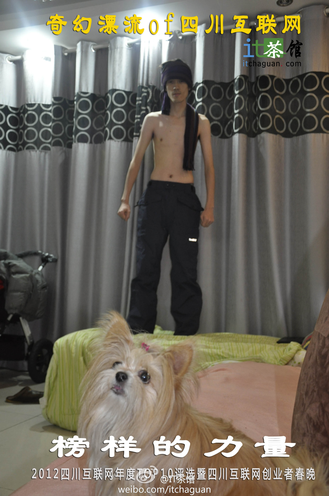

四川出人才啊。@IT茶馆:【榜样的力量：#2012四川互联网十佳评选#开始啦！】年年岁岁花相似，岁岁年年人不同。2012有哪些新锐企业涌现，在网站、电商、游戏和移动互联网领域又有哪些榜样值得学习，参加IT茶馆的年度TOP10评选，有机会获得行业资深人士点评，更是展现自我的机会。 网页链接 
//@飞象网项立刚：构建移动互联网的商业模式，必须去媒体化，追求建立起服务体系，提供有价值的精准服务。那些以传播为核心的业务一般都处于半死和要死，服务性的业务才能商业上大成功。这个意义上看微信和微博，微信有机会挣大钱，微博可能会永远在亏损边缘挣扎。@飞象网项立刚:互联网最有价值的能力是传播，自由、无疆界、免费是它的追求，这样可令传播更高速。但传播的商业价值不高。移动互联网最大的价值是服务，服务要求管理、个性化、有针对性，这样服务才能精准，才能真正帮用户解决问题。服务的商业价值很高。其实认真想腾讯、华为做的都是服务。
//@蒋涛CSDN: @孟迎霞 赶紧给@刘江总编 找个妹子 //@时蝇喜箭:找抽 //@程序员邹欣: 如果发现妹子没有认真工作, 即可反手抽之... //@邹记杂货铺: 真心需要这个！！求抽！！！//@猫妈的一地鸡毛: ！！ //@二十十一十十://@是也Fei也: 今天你拖了没有？要不要找抽？---:抱歉，作者已设置仅展示半年内微博，此微博已不可见。
联合行动//@fiona_duan: Adobe联合火狐社区发起的开发者免费技术交流活动欢迎大家参加！活动中有#CreateJS介绍# Adobe CS6 中提供的一个免费的扩充功能CreateJS，它是一个完整的 JavaScript 游戏和动画开发包括:EaselJs,TweenJS,SoundJS,PreloadJS and Zoe。本周四在火狐办公室和大家不见不散！@火狐:#火狐活动#开放网络技术的移动操作系统专题活动 ——将由火狐社区携手北京GNOME用户组一同举办，和大家分享#Firefox OS#与平板上的基于Web的操作系统，就在2012年12月20日晚火狐中国办公室（建国门外）。末日之前，参加一场开源聚会也不错~ 活动免费，报名地址：网页链接
#OpenStack#中国行武汉站。2012年12月22号下午在武汉华中科技大学 C5-509为多媒体教室。这是OpenStack中国行在北京，深圳，成都，西安，上海，南京，天津之后的OpenStack中国行2012年的最后一个城市。八城市巡展要感谢各位组织者@程辉 @Adela可爱多 @ben_杜玉杰 这周六，武汉见网页链接
50岁才开始跑。//@王巍w://@刘瑞琳: 为自由而跑的柳红@刘瑞琳:再读一次，依然泪流满面。柳红是我眼里最美的女人。很多女人的青春30岁就结束了，她的青春从50岁开始，因为有深情，有大爱，有境界，有追求。跑步对我意味着什么？
 网页链接
网页链接